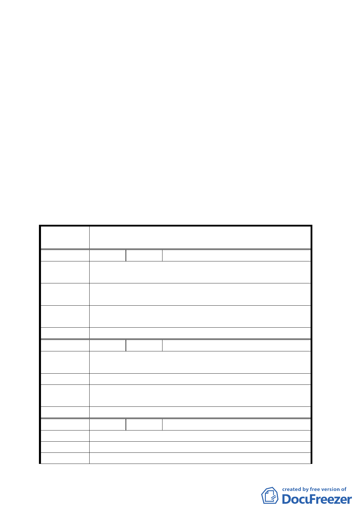

報資料修正通過。
（一）本地區同意適用「臺北市建築物增設室內公用停車
空間鼓勵要點」。
（二）都市設計管制原則有關計畫區內建築之高度管制修
正為以二十四公尺為原則，刪除樓層數規定。
（三）有關開發時程獎勵部份修正為第一期（本修訂計畫
案公告實施且區段徵收完成後三年以內）獎勵標準
為 10％；第二期（本修訂計畫案公告實施且區段徵
收完成後三年以後，五年以內）獎勵標準為 5％。
二、公民或團體所提意見審決如后附綜理表。
臺北市都市計畫委員會公民或團體所提意見綜理表
案 名 修訂台北市士林官邸特定商業區細部計畫案
編 號 １ 陳情人 吳郭澄子
陳情理由
被禁建五十年，還要被超嚴格管制高度和容積率，真是天
理何在？地主們捐出了 60％土地，請說明將作何用途。
建議辦法
1.請調高容積率至少 375％以資補救地主連 40％都未能拿
完之憾。
專案小組結 有關本計畫案容積相關規定，同意維持原基本容積 225％，
論 加之以其他容積獎勵方式處理。
委員會決議 同專案小組審查結論。
編 號 2 陳情人 張晏誠
陳情理由
地主們實際分到的土地遠低於四成，況土地被迫禁建四、
五十年，情何以堪？請以同理心想想。
建 議 辦 法 請以面對中山北路大馬路的標準加倍調高容積率。
專案小組結 有關本計畫案容積相關規定，同意維持原基本容積 225％，
論 加之以其他容積獎勵方式處理。
委員會決議 同專案小組審查結論。
編 號 3 陳情人 劉郭志津
陳 情 理 由 修正後地主所拿到的土地比率更見減少，實在欺人太甚！
建 議 辦 法 請提高容積率以資補償！
專案小組結 有關本計畫案容積相關規定，同意維持原基本容積 225％，
五